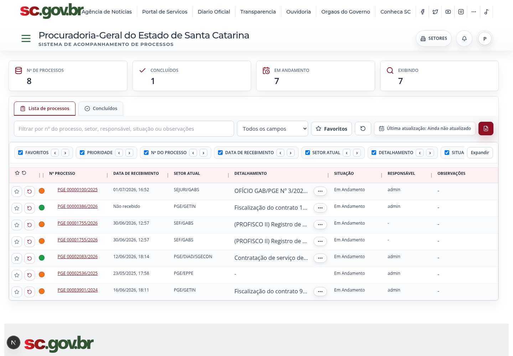
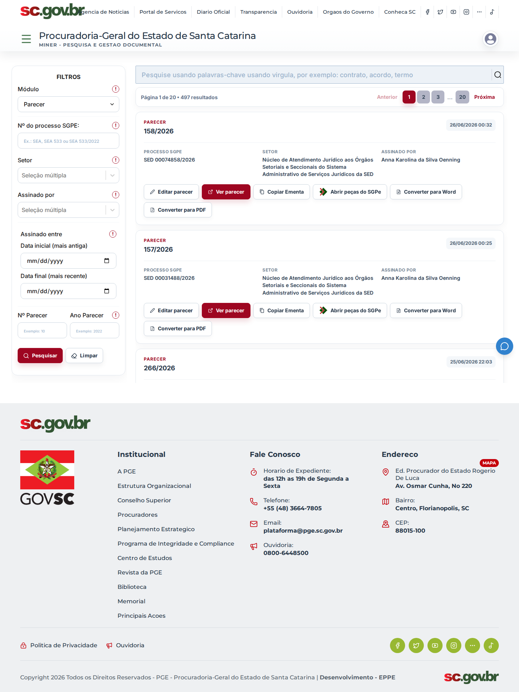
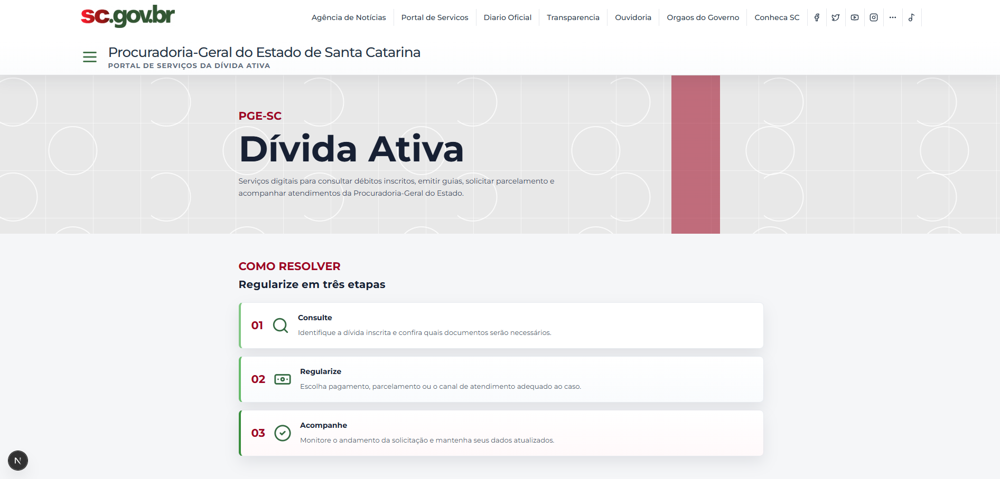
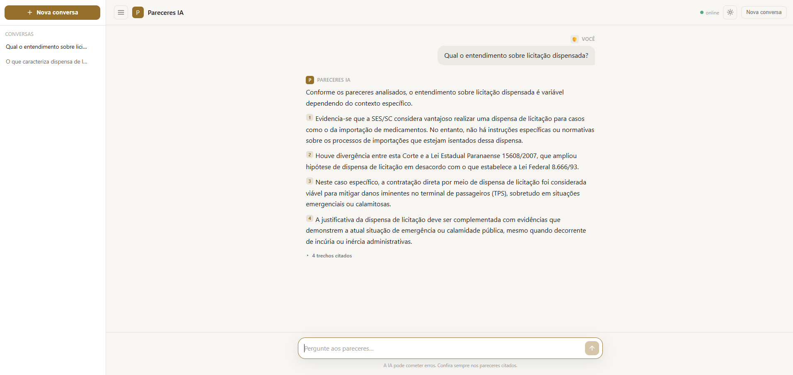
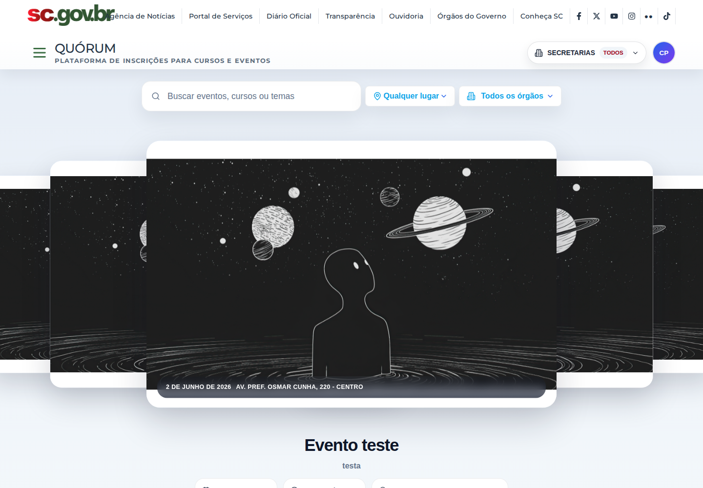

Produtos apresentados como estudos de caso, com contexto, responsabilidade e telas reais.
Florianópolis, SC · 2026
Luis Felipe Reis
Desenvolvedor full stack. Construo sistemas web internos e portais públicos para a Procuradoria-Geral do Estado de Santa Catarina — do levantamento do processo ao container em produção.

Plataforma PGE — produto em operação
01 / 07
01 — Sobre
Do problema de negócio ao container em produção.
Crio sistemas web completos para transformar rotinas reais em produtos organizados, com frontend, backend, banco de dados, automações, integrações e infraestrutura preparada para execução em Docker.
Meu trabalho passa por entender o processo existente, reduzir etapas manuais e entregar uma solução completa. Isso inclui interface, API, banco, integrações, observabilidade e o ambiente Docker onde o sistema realmente roda.
Descoberta, interface, backend, banco de dados, integrações e deploy.
Desenvolvimento e validação em containers próximos da produção.
02 — Projetos selecionados
Problema, implementação e resultado. Sem conceito fictício.
01 / Plataforma institucional
Plataforma PGE
Hub institucional que centraliza sistemas internos da PGE-SC, autenticação, permissões, favoritos, notificações e atalhos para módulos administrativos e jurídicos. O módulo funciona…
Ver estudo de caso →
Módulo 02
Sistema SAP
Sistema de acompanhamento de processos SGPE integrado à Plataforma PGE. O módulo organiza processos por setor, prioridade, situação, responsáveis, observações e favoritos, com…
Ver estudo de caso →
Módulo 03
Pareceres
Sistema jurídico para consulta, cadastro, gestão e publicação de pareceres, com leitura de PDFs, metadados de processo, sigilo, assinatura, superação de pareceres, integração com SGPe…
Ver estudo de caso →
Módulo 04
Atendimento Profis
Duas frentes no mesmo módulo: o Portal público da Dívida Ativa, onde o cidadão consulta débitos inscritos, emite guia de pagamento e encontra requisitos de parcelamento, transação…
Ver estudo de caso →
Módulo 05
Pareceres IA
Assistente jurídico conversacional (RAG) sobre uma base real de mais de 46 mil pareceres da PGE — cerca de 730 mil trechos indexados. A pessoa pergunta em linguagem natural e recebe…
Ver estudo de caso →
Módulo 06
Sistema de Cadastro de Eventos
Plataforma Quórum para publicação, inscrição e operação de cursos e eventos. O módulo reúne vitrine pública, página de detalhes, formulário de inscrição, gestão administrativa,…
Ver estudo de caso →
Módulo 07
Pautas de Audiência
Consolida as pautas de julgamento dos órgãos julgadores num calendário único. O sistema importa sessões, processos, partes e assuntos direto do tribunal por webservice SOAP, organiza…
Ver estudo de caso →03 — Ferramentas
Tecnologia é escolha de contexto, não coleção de logos.
Frontend
Interfaces administrativas, formulários complexos, tabelas operacionais e visualização de documentos.
Backend
APIs, regras de negócio, autenticação, rotinas de importação e processamento em segundo plano.
IA e documentos
IA aplicada à recuperação de informação jurídica, perguntas com fontes e processamento documental.
Bancos e busca
Dados relacionais, fontes corporativas legadas e índices para pesquisa em alto volume.
Infraestrutura
Ambientes reproduzíveis, publicação de aplicações e operação de serviços containerizados.
Integrações
Comunicação com serviços institucionais, autenticação corporativa e sistemas jurídicos externos.
04 — Contato